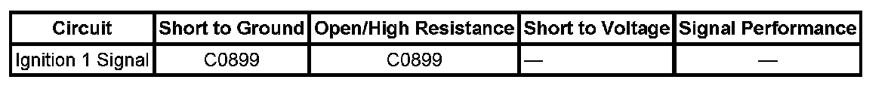

C0899
DTC C0899
DTC DESCRIPTOR
DTC C0899
Device Voltage Low
DIAGNOSTIC FAULT INFORMATION

Perform the Diagnostic System Check - Vehicle prior to using this diagnostic procedure. Initial Inspection and Diagnostic Overview
CIRCUIT/SYSTEM DESCRIPTION
The electronic brake control module (EBCM) monitors the ignition voltage level available for system operation. A low voltage condition prevents the system from operating properly.
CONDITIONS FOR RUNNING THE DTC
Ignition is ON.
CONDITIONS FOR SETTING THE DTC
This fault will be set if the ignition voltage to EBCM is less than 9 volts for 100 msec.
ACTION TAKEN WHEN THE DTC SETS
- Traction Control System (TCS) and Vehicle Stability Enhancement System (VSES) for the duration of the ignition cycle.
- The TCS indicator turns ON.
- The driver information center (DIC) displays the Service Stability System message.
CONDITIONS FOR CLEARING THE DTC
- The condition for the DTC is no longer present.
- The EBCM automatically clears the history DTC when a current DTC is not detected in 100 consecutive drive cycles.
CIRCUIT/SYSTEM TESTING
1. Measure and record the voltage at the battery terminals. With scan tool, observe the battery voltage signal parameter. Verify that battery terminal voltage and battery voltage signal readings do not differ more than 1 volt.
- If more than 1 volt, test the battery positive voltage and ground circuits of the EBCM for an open/high resistance or replace the EBCM.
2. Refer to Charging System Test. Charging System Test
REPAIR INSTRUCTIONS
Perform the Diagnostic Repair Verification after completing the diagnostic procedure. Verification Tests
Control Module References for EBCM replacement, setup and programming. Programming and Relearning